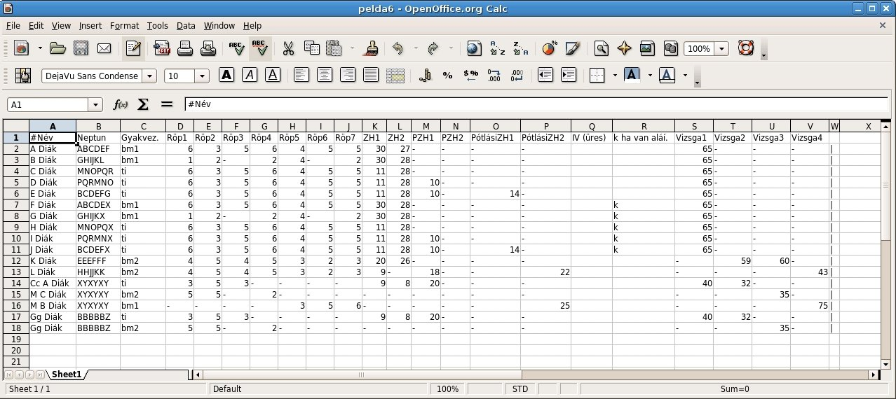
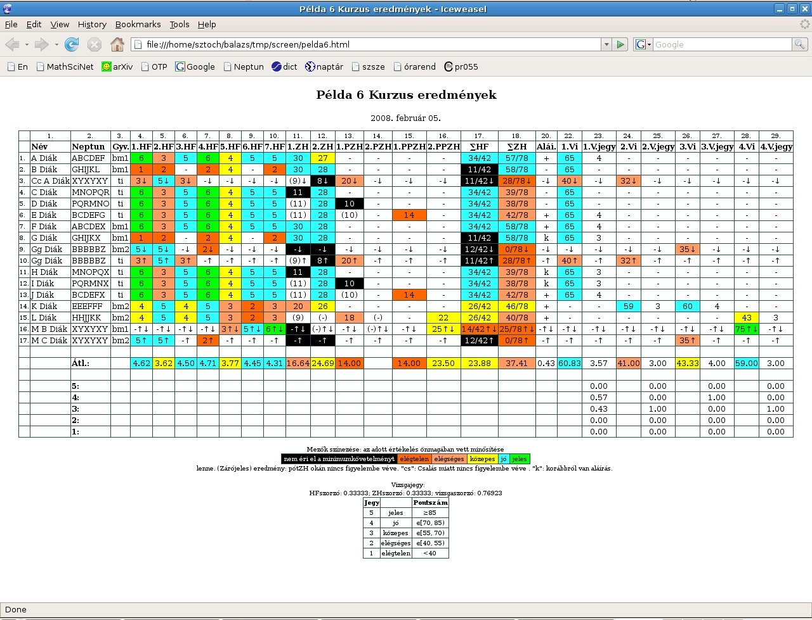

ZH pontozó
(A 2008 február előtti első verzióhoz klikk ide!)
A ZH pontozó egy bash (azaz Linuxon/Unixon, például az Omnibuson futó) script, amely a hallgatók félév közben és vizsgákon szerzett pontszámait könyveli, kiértékeli, osztályozza. A bemenet néhány adat a követelményekről, és egy egyszerű szövegfileban vagy táblázatkezelőben készült lista a hallgatók pontszámairól:
#Név;Neptun;Gyakvez.;Röp1;Röp2;Röp3;Röp4;Röp5;Röp6;Röp7;ZH1;ZH2;PZH1;PZH2;PótlásiZH1;PótlásiZH2;IV (üres);"k" ha van aláí.;Vizsga1;Vizsga2;Vizsga3;Vizsga4 A Diák;ABCDEF;bm1;6;3;5;6;4;5;5;30;27;-;-;-;-;;;65;-;-;- B Diák;GHIJKL;bm1;1;2;-;2;4;-;2;30;28;-;-;-;-;;;65;-;-;- C Diák;MNOPQR;ti;6;3;5;6;4;5;5;11;28;-;-;-;-;;;65;-;-;- D Diák;PQRMNO;ti;6;3;5;6;4;5;5;11;28;10;-;-;-;;;65;-;-;- E Diák;BCDEFG;ti;6;3;5;6;4;5;5;11;28;10;-;14;-;;;65;-;-;- F Diák;ABCDEX;bm1;6;3;5;6;4;5;5;30;28;-;-;-;-;;k;65;-;-;- G Diák;GHIJKX;bm1;1;2;-;2;4;-;2;30;28;-;-;-;-;;k;65;-;-;- H Diák;MNOPQX;ti;6;3;5;6;4;5;5;11;28;-;-;-;-;;k;65;-;-;- I Diák;PQRMNX;ti;6;3;5;6;4;5;5;11;28;10;-;-;-;;k;65;-;-;- J Diák;BCDEFX;ti;6;3;5;6;4;5;5;11;28;10;-;14;-;;k;65;-;-;- K Diák;EEEFFF;bm2;4;5;4;5;3;2;3;20;26;-;-;-;-;;;-;59;60;- L Diák;HHJJKK;bm2;4;5;4;5;3;2;3;9;-;18;-;-;22;;;-;-;-;43 Cc A Diák;XYXYXY;ti;3;5;3;-;-;-;-;9;8;20;-;-;-;;;40;32;-;- M C Diák;XYXYXY;bm2;5;5;-;2;-;-;-;-;-;-;-;-;-;;;-;-;35;- M B Diák;XYXYXY;bm1;-;-;-;-;3;5;6;-;-;-;-;-;25;;;-;-;-;75 Gg Diák;BBBBBZ;ti;3;5;3;-;-;-;-;9;8;20;-;-;-;;;40;32;-;- Gg Diák;BBBBBZ;bm2;5;5;-;2;-;-;-;-;-;-;-;-;-;;;-;-;35;- |
avagy ugyanez táblázatkezelőben:

És ez a kimenet:

A program által készített html-táblázat akár félév közben, akár vizsgaidőszakban színkódokkal tájékoztat az adott értekelések szintjéről, kiértékeli a ZH-k, pótZH-k, pótpótZH-k, IVZH-k eredményeit, az aláírás követelményeinek teljesítését, a korábbi félévről hozott aláírást, és a vizsga eredményeit, figyelmeztet a dupla neptun-kódok előfordulására, átlagokat számol. A program különböző kurzusok sokféle követelményeit figyelembe tudja venni, képes gyakorlatvezetők és/vagy vizsgalapok szerint válogatni a hallgatók között, illetve az eredményeknek csak számunkra fontos részét megjeleníteni. A megjelenítés módja egy publikus és a fent látható nem publikus html táblázat, az előbbi nevek nélkül (azaz kitehető az oktató honlapjára, vagy nyomtatás után a faliújságra), az utóbbi nevekkel. A html-ből (esetleg az oldal kicsinyítése után) nyomtatni is lehet kedvenc böngészőnkkel. A csomagban van angolul beszélő verzió is, illetve angolul beszélő, amerikai stílusú (A+, A, A-, B+, B, B-, C+, C, C-, D, F osztályzatokat adó) verzió is. Amerikai kurzusban persze név nélkül sem szabad közzétenni az eredményeket.
Részletes leírás és különféle példák is vannak a használathoz, és két segédeszköz: az egyik arra jó, hogy a pontszámokat táblázatkezelőben tudjuk beírni, és a megfelelően mentett file-t a program fel tudja használni bemenetként. A másik pedig akkor hasznos, ha nagy tárgyunk van, sok gyakorlatvezetővel: a megfelelő beállítások után egyetlen gombnyomásra a különböző gyakorlatvezetőktől (pl. url címek vagy Dropbox könyvtárak) begyűjti, összefűzi, feldolgozza, archiválja és publikálja az eredményeket.
Bár tesztjeim során jól működött, semmiféle garanciát nem vállalok arra, hogy a program helyes eredményeket szolgáltat. Cserébe mindenki szabadon viheti, használhatja, átírhatja a kódot.
Alább letölthető a csomagolt file. Fontos, hogy ne legyen "zhpontozo" nevű könyvtár a home könyvtárunkban. Fontos még az is, hogy ahol majd dolgozunk a programmal, ott ne legyen .osz, .zha, .zhb, .zhc, .zhd, .zhe, .zhg, .zhr, .zhs, .zhv kiterjesztésű file ugyanolyan névvel, mint amilyennel dolgozunk (lásd a használati utasítást).
A letöltött zh.tar.gz file-t a home könytárunkba kell másolni, majd kiadni a
gzip -d zh.tar.gz
és
tar -xf zh.tar
parancsokat. Ezután a zhpontozo/doc/olvassel.txt, tablkezelo.txt, begyujtes.txt fileokban találhatjuk a használati utasítást, és a zhpontozo/ könyvtárban vannak példák is.
Köszönettel tartozom Székely Balázsnak, aki felhívta a figyelmemet a bash csodálatos lehetőségeire.
Tehát itt a csomag: zh.tar.gz